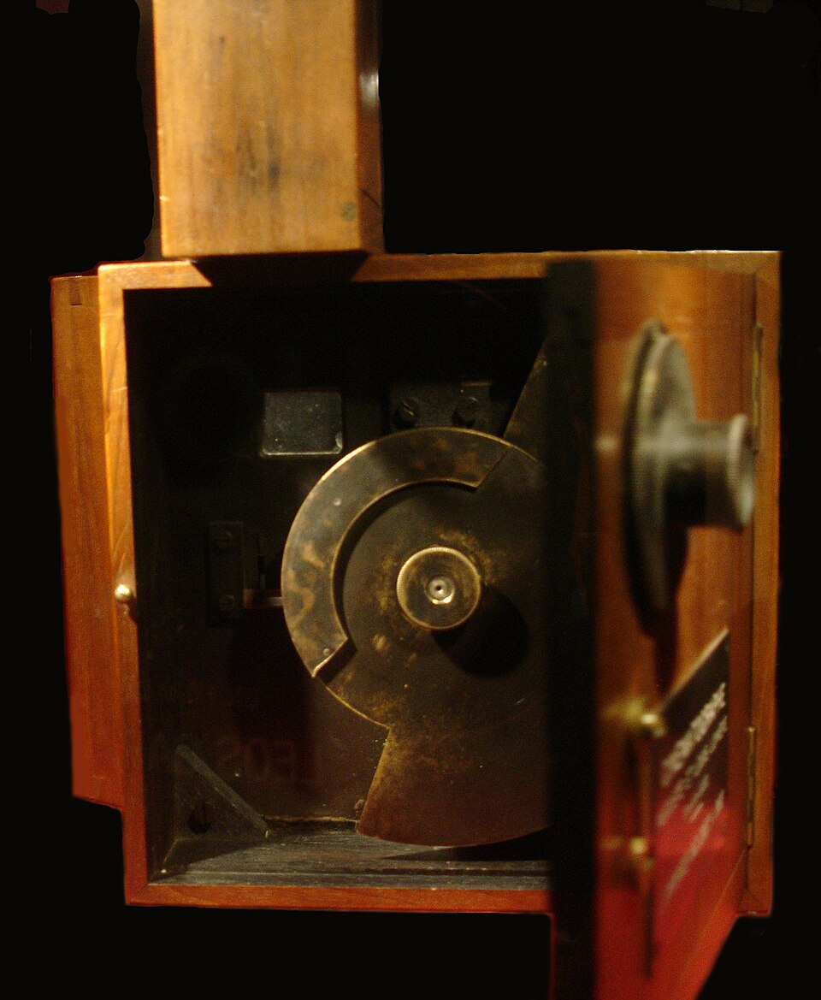

Categoría: Historia del cine
Los orígenes del cine en Latinoamérica (1896-1930)
Periodo: 1896-1930

El cine llegó a Latinoamérica como un espectáculo de imágenes en movimiento, pero pronto se convirtió también en una manera de registrar ciudades, acontecimientos y personajes de la región. Entre 1896 y 1930 se formaron públicos, circuitos de exhibición y experiencias de producción propias. No existió un único punto de partida latinoamericano: la llegada de aparatos, la realización de películas y la organización de empresas siguieron ritmos distintos en cada país.
En la Ciudad de México, el historiador Aurelio de los Reyes sitúa una primera función pública el 14 de agosto de 1896, con películas procedentes de los Lumière. Sus representantes Gabriel Veyre y Claude Fernand Bon Bernard también filmaron escenas en México. Aquellas vistas hechas con equipos extranjeros muestran una distinción importante: una película rodada en un territorio no implicaba necesariamente la existencia de una industria nacional. [1]
La exhibición no se limitó a una sala de la capital. Empresarios y operadores viajaron con proyectores, organizaron funciones y, en ocasiones, filmaron a los habitantes de las localidades visitadas. Salvador Toscano fue uno de esos empresarios; sus registros de acontecimientos públicos son parte de una etapa en la que las actualidades convivían con películas importadas. Desde 1906 aparecieron distribuidoras y se ampliaron los salones de cine, mientras el acceso a película virgen, equipos y novedades extranjeras condicionaba el negocio. [1]
En México también surgieron experiencias de producción argumental. De los Reyes documenta un taller de American Amusement, Lillo, García y Compañía en 1908. El automóvil gris de Enrique Rosas se estrenó en 1919 y, según la Filmoteca de la UNAM, se proyectó originalmente en episodios. La película, inspirada en hechos criminales, combina ficción con registros documentales. Esta evolución no eliminó los documentales y noticiarios, especialmente relevantes durante los años de la Revolución mexicana. [1] [5]
En Argentina, Nobleza gaucha, estrenada en 1915, ofrece un ejemplo de la capacidad de una producción local para encontrar públicos más allá de su lugar de origen. Participaron Eduardo Martínez de la Pera y Ernesto Gunche, el director Humberto Cairo y el guionista José González Castillo. Tras un primer estreno fallido, una nueva versión de sus intertítulos acompañó su éxito; la película se exhibió también en Brasil y otros países latinoamericanos. Su recorrido no significa que todas las producciones argentinas tuvieran la misma circulación. [2]
Brasil desarrolló experiencias fuera de sus mayores centros urbanos. En Cataguases, Minas Gerais, Humberto Mauro realizó en 1925 Valadião, o cratera con una pequeña cámara y después filmó un documental local y largometrajes en 35 mm. Hacia el final de la década se trasladó a Río de Janeiro y comenzó a trabajar con Adhemar Gonzaga. El caso muestra cómo una iniciativa regional podía relacionarse con proyectos de producción de mayor escala, sin que eso suponga que todo el cine brasileño siguiera la misma trayectoria. [3]
En Chile hubo un programa cinematográfico en Santiago en 1896. Durante las décadas siguientes, junto a las películas extranjeras, crecieron las producciones nacionales. La Biblioteca Nacional de Chile destaca El húsar de la muerte (1925), dirigida y protagonizada por Pedro Sienna, entre las obras de una década de actividad argumental. Su producción se enfrentó a la estrechez financiera y a la competencia en la distribución. [4]
Estas películas mudas no eran necesariamente espectáculos silenciosos: podían proyectarse con acompañamiento musical y recurrían a intertítulos para transmitir diálogos o información. Las formas de exhibición variaban. Hacia 1930, la introducción del sonido sincronizado abría una transición técnica y económica que se desarrollaría de manera desigual en la región. Los caminos recorridos hasta entonces prepararon parte de la experiencia empresarial y artística de etapas posteriores, pero no garantizaban por sí solos la continuidad de cada cinematografía.
Conocer este periodo también depende de la conservación. Muchas películas se perdieron o deterioraron, de modo que la historia se reconstruye con copias supervivientes, prensa, documentos de producción y catálogos. Los archivos son esenciales para estudiar lo que llegó a las pantallas, sin confundir el patrimonio conservado con la totalidad de lo que se produjo.
Fuentes y referencias
- Aurelio de los Reyes, «El cine en México 1896-1930», en Cine Latinoamericano 1896-1930, biblioteca de la Fundación del Nuevo Cine Latinoamericano, 1989.
- Secretaría de Cultura de Argentina, «110 años del estreno de Nobleza Gaucha», 2025.
- Cinemateca del Museu de Arte Moderna do Rio de Janeiro, «Humberto Mauro» (en portugués).
- Memoria Chilena, Biblioteca Nacional de Chile, «El cine chileno (1910-1950)».
- Gaceta UNAM, «Centenario: El automóvil gris», 2019.